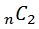
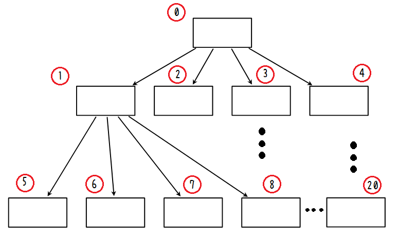
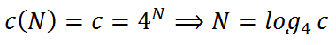

四分木探索（拡張編）
・多対多判定
前回までは1対多の当たり判定をとることに着目していました。
ここでは多対多の当たり判定をとることに着目したいと思います。
多対多、つまり個数をnとしてn対nの当たり判定をとるためにはどうしたら良いでしょうか。
ここでの目的は「全体を見渡して衝突している物体同士のペアをもれなく発見・抽出する」ことですので、
前回の1対n判定をn回回すことでは実現できません。
なぜなら前回の1対n判定は「対象(1対nの'1'側)が一つでも他の物体に当たっているか」を返すため、
複数同時に衝突している可能性は加味していないためです。
ではどうするか、言うまでもなく単純なn*nの総当たりは愚策です。
組み合わせなので内側のforループの始点をずらしていけば重複なく全通り比較できますが
それでも比較回数は=n(n-1)/2のn*nオーダーο(n^2)には変わりません。
物体qiに対しての衝突判定を図にすると上のような表になります（T,Fは適当です）。
組み合わせ比較は例えば(q0,q3)が衝突しているときは(q3,q0)も衝突しているというある種当たり前の性質を使うことで比較回数を半分にしています。
しかしο(n^2)なことには変わりないので物体総数が増えれば比較時間がかさみます。
今回はこの全探索を四分木を用いて高速化しようというのが目的です。
・四分木探索
前回のCellListでは線形四分木として一次元配列上に空間リストを保持しましたが、四分木の本質はその名の通り木構造です。
空間番号0のルート空間から４つの枝を持ち、次の子空間へ繋がります。
↓

赤い丸の中の番号が空間番号です。
1対多の当たり判定をとるとき、上位判定と下位判定を組み合わせて衝突している可能性がある空間内を探索しましたが、
今回はルート空間（番号0の空間）から1回だけこの木をまわり、判定していきます。
変則下位探索オンリーといったところでしょうか。
その方法ですが、まずルート空間に所属している物体同士の衝突判定をとります。
この時は仕方ないので組み合わせ探索を行い、衝突していた物体の組み合わせを衝突判定リストに保存します。
組み合わせ探索はο(n^2)ですが範囲を"ある空間に所属している物体"と限定すればその個数は全探索より少なく見積もることができます。（後で詳しく考察します）
ルート空間内の判定が終わったら次は子空間ですが、このとき子空間の処理に移る前に現在の空間に所属する物体を全てスタックに積んでおきます。
そしてそのスタックを引き継いだまま子空間の処理を再帰します。
ルート空間からの一番始めの再帰先は1番の空間です。
1番の空間でもまず1番の空間に所属している物体同士の組み合わせ探索を行い。
そしてさらに予めスタックに積んでおいた物体（上位に存在し、衝突している可能性がある）とも判定をとります。
これで1番の空間での処理は終わりますが1番は子空間を持ちますので、自身の持つ物体を全てスタックに積んで再帰します。
この時点でスタックには[0番（ルート）に所属する物体集合][1番に所属する物体集合]が積まさっています。
このスタックを引き継いで1番の子空間の1番始め、5番の空間の処理に移ります。
5番の空間でもその空間内、およびスタックと判定をとった後、再帰しようとしますが5番は子空間を持ちません。
よって自身の物体をスタックに積まずに処理を返します。
処理が返ってくると1番の段階に戻ります。そして次の子空間である6番に処理が移り、7番、8番と続けていきます。
1番の子空間を全て探索し終わったら、スタックから[1番に所属する物体]を取り除いて0番に処理を返します。
0番は同様に2番、3番、4番と再帰していけば上位との判定もとりながら全ての空間内の全ての物体同士の判定がとれたことになります。
木構造を探索するのには再帰とスタックが有効です。これで1回だけ木をまわることで衝突判定リストが作成できました。
以上の深さ優先探索を行うコードは以下のようになります。
なお、前回の空間リストクラスCellListを改良し、多対多の衝突判定リストを作成する関数もこのCellListクラスの機能として実装します。
ベースは前回コードを見てください。■
//CCellList.h
//空間リストクラス
class CellList{
・
・
・
private:
//空間探索用再帰関数
void GetAllCollisionList(int index,list<Cell*>& upperStack,vector<pair<Mover*,Mover*> >& res);
public:
//衝突判定リスト
vector<pair<Mover*,Mover*> > GetColisionList();
};
//CellList.cpp
・
・
・
//再帰しながら当たり判定をとりresに衝突リストを形成していく
void CellList::GetAllCollisionList(int index,list<Cell*>& upperStack,vector<pair<Mover*,Mover*> >& res){
//現在探索中の空間に所属している物体へのポインタ
//呼び出しが煩雑になることを防止する受け皿目的
Mover *cm,*tm;
//現在indexの空間に所属するCell(物体)同士の組み合わせで当たり判定をとる
for(Cell* cur=cpList[index].next;cur!=&cpList[index];cur=cur->next){
cm=cur->mp;
//現在の空間リストと当たり判定(n(n-1)/2)
for(Cell* t=cur->next;t!=&cpList[index];t=t->next){
tm=t->mp;
//衝突していれば衝突判定リストへ追加
if(cm && tm && cm!=tm && cm->IsCollision(tm)!=NULL){
res.push_back(make_pair(cm,tm));
}
}
//上位スタックと当たり判定
for(list<Cell*>::iterator it=upperStack.begin();it!=upperStack.end();++it){
tm=(*it)->mp;
//衝突していれば衝突判定リストへ追加
if(cm && tm && cm->IsCollision(tm)!=NULL){
res.push_back(make_pair(cm,tm));
}
}
}
//子空間の番号
int nextIndex=4*index+1;
//範囲外チェック（現在の空間は子空間を持たない）
if(nextIndex>=Cell::GetIndex(N+1,0))return;
//現在の空間が子を持つならば
//現在の空間をスタッキング
int n=0;
for(Cell* cur=cpList[index].next;cur!=&cpList[index];cur=cur->next){
upperStack.push_back(cur);
n++;
}
//子空間に移動(現在空間のスタックを引き継ぐ)
for(int i=0;i<4;i++){
GetAllCollisionList(nextIndex+i,upperStack,res);
}
//スタック解放
for(int i=0;i<n;i++)upperStack.pop_back();
}
//衝突判定リスト
vector<pair<Mover*,Mover*> > CellList::GetColisionList(){
//結果(衝突している物体のペアリスト)
vector<pair<Mover*,Mover*> > res;
//再帰しながら衝突判定リストを取得
GetAllCollisionList(0,list<Cell*>(),res);
return res;
}
先程から使っている「衝突判定リスト」とは衝突している物体の組み合わせを表したペアのリストで多対多衝突判定の結果となるものです。
このページ一番始めに載せた図の表の例だと、表に現れているものに限るとして、
res={(q0,q3),(q0,qn-1),(q1,qn-2),(q2,qn-2),(q3,qn-1)}
となります。これらのペアは「衝突している」と判定されました。
実装上は「リスト」といいつつvector<pair<Mover*,Mover*> >となります。
再帰関数の中でも解説のとき「スタック」といいつつlist<Cell*>を使っています。
・処理時間
ではこの四分木を用いた実装により処理時間がどれくらい高速化したのか計算してましょう。
ここでは物体同士の比較操作(IsCollision)のみをステップ数としてカウントし、それ以外の処理にかかる時間を全て無視します。
（本来は再帰にかかるオーバーヘッドやリストの要素間のコピーなどの時間も含まれますがそれを無視します。）
これから長々と計算していきますが結論としてはο(n^2)からο(n・log(n))に改善されました。
（計算を読み飛ばして処理時間の実測へ進む−＞■）
まず画面上に存在する全オブジェクト数をBとします。
これらオブジェクトは必ずどこかの空間に所属しています。
見方を変えると各空間は0個以上のオブジェクトを保持しています。そこである空間iはmi個の物体を保持しているとします。
前回同様ルート空間のレベルLを0,最大分割レベルをN=2とすると、空間数cはLの等比関数で表され、
空間数の総計をCとすると
全オブジェクト数Bは
と表される。
今、Bが平均的に空間に所属している、即ち全ての空間に等しい個数のオブジェクトが所属しているとすると平均Mは
レベルLにある空間一つあたりにかかる時間をT(L)とすると、
L=0のルート空間については番号0の空間内の判定に組み合わせ探索よりn(n-1)/2,さらに4つの子空間の和より
なお上式において今、レベル1にある空間はどの空間でも保持物体数がMで等しく対称なので処理時間は等しいとした(式中の4T(1))
どの空間でも保持物体数がMで等しいので、空間内の探索にかかる時間をmと置き換えると組み合わせ探索より
とするとT(0)は
同様にT(1)を考えると、子空間4T(2)、自分の空間内m、上位を表すスタック（要素M個）との比較にM^2かかるので、
もう少し考えてT(2)について、子空間4T(3)、自分の空間内m、上位を表すスタック（要素2M個）との比較に2M*Mかかるので、
これを繰り返していくといつかは葉ノードにたどりつき、最高レベルNについて考えると
ここで葉ノードは個空間を持たないのでT(N+1)=0とした。
以上よりT(0)を求めると
T(N)=m+NM^2かつmの項のオーダーはο(4^N),Mの項のオーダーはο(N4^N)より結局、
ここで最大レベルでの空間数について

とすると
Cとc(N)のオーダーは同じ、かつと
より
今、MとBについてBの方が支配的だとすると
Bは全オブジェクト数だったので、これでο(n・log(n))が示せました。
かなり論理が怪しいのは勘弁してください。
もちろんこれは完全に平均的(分散0)な時を考えた理想的な状況を想定しています。
最悪は平均MについてBがある一つの空間に全て所属している時で、このときは漸化式もなく
と組み合わせ探索と同じくο(n^2)オーダーです。
オブジェクトの所属の偏りについては統計学的な解析が必要ですがここではそこまで立ち入らないこととします。
平均か一極集中かどちらが「ありそう」かと言えば圧倒的に前者だということは納得していただけますでしょうか(^^;
前回同様処理時間を測ってみました。
その計測結果がこちら（環境によって変わりますのであくまで参考です）
おなじみのn=1000までのグラフ
横軸が画面上に存在するオブジェクトの個数。
縦軸がマイクロ秒(10^(-6)[sec])です。
波線で示したオーダーの基準となる式の指標は、始点と傾きをn対nの始めと合わせました。
やはりn・log(n)に近い結果得られました。
木構造で示されるアルゴリズムは大体n・log(n)オーダーになります。
線形nとはいきませんでしたがn・log(n)なら一見実用に耐えられるんじゃないかと思います。
が、よく見てください、前回60fpsを確保するなら160マイクロ秒までに押さえる必要があると言いました。
上のグラフをみると50対50ぐらいでもう160超えてます。
原因としては再帰やコピーのオーバーヘッドでしょうか。実用には微妙なところですね。
・まとめ
なんともあいまいな終わりですがここまでとしておきます。
参考サイト様も前回と同様です。
一般に出回っているゲームではどのように判定してるのでしょうか。
衝突判定は興味深いですね。
あー１対nの定数オーダーがすばらしい〜
・参考サイト様
マルペケつくろーどっとコム ― ゲームつくろー！ 衝突判定編
その８ 4分木空間分割を最適化する！（理屈編）